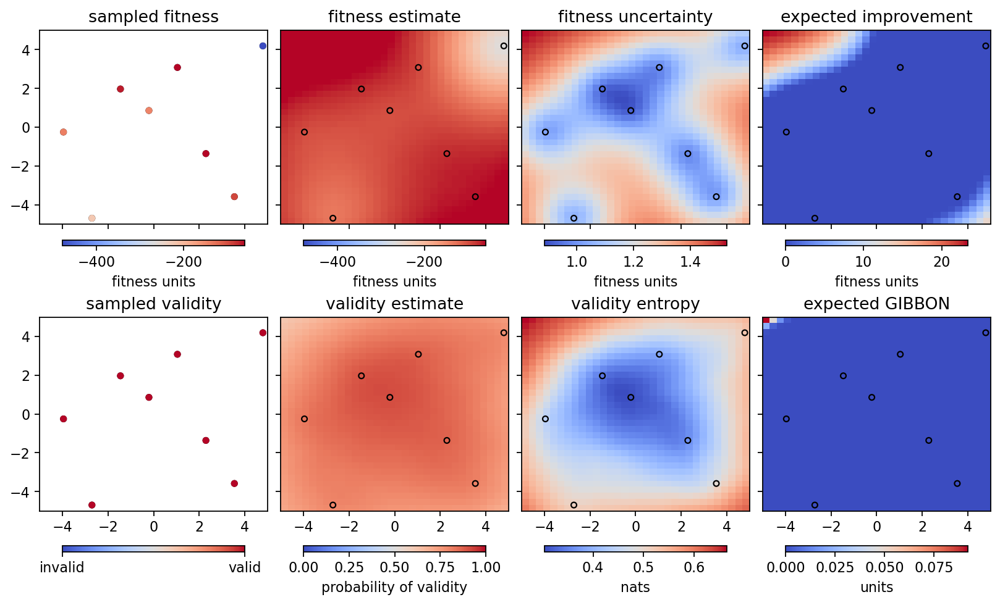
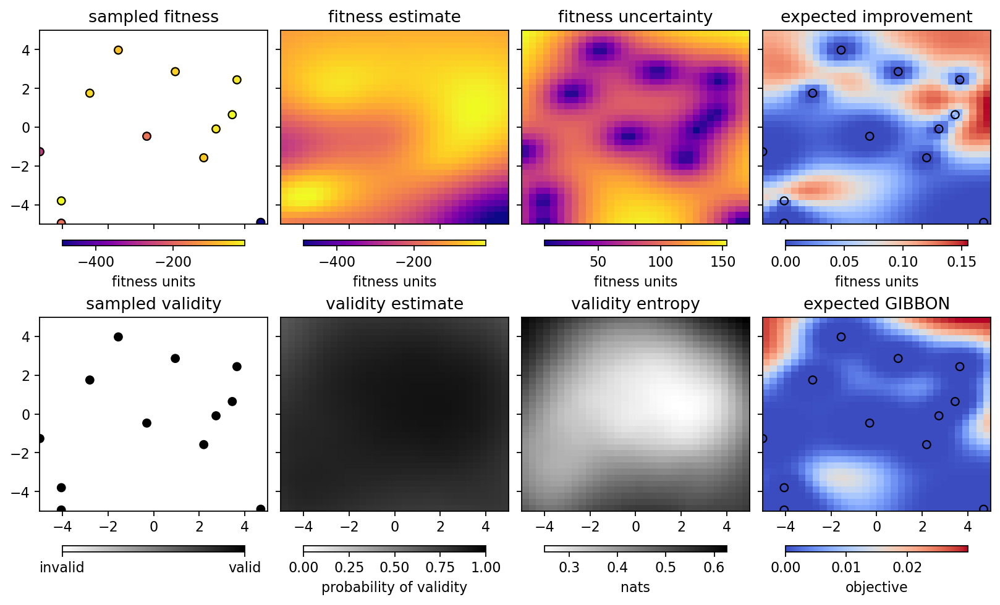
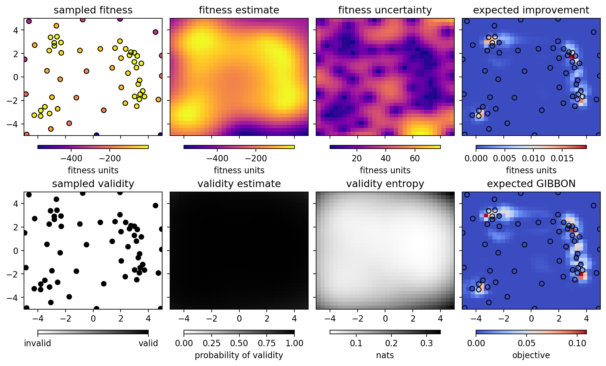

Running the optimizer with Himmelblau’s function¶
[1]:
%run -i ../../../examples/prepare_bluesky.py
import bloptools
from bloptools.experiments.tests import Himmelblau
himmelblau = Himmelblau()
[2]:
boa = bloptools.bo.BayesianOptimizationAgent(
dofs=himmelblau.dofs,
dets=[],
bounds=himmelblau.bounds,
db=db,
experiment=himmelblau,
)
RE(boa.initialize(init_scheme='quasi-random', n_init=8))
learning with strategy "quasi-random" ...
Transient Scan ID: 1 Time: 2023-04-24 20:16:45
Persistent Unique Scan ID: '98c36157-a8f4-4c93-9b14-28a1b8a11410'
New stream: 'primary'
+-----------+------------+------------+------------+
| seq_num | time | x1 | x2 |
+-----------+------------+------------+------------+
| 1 | 20:16:46.1 | 3.931 | 1.064 |
| 2 | 20:16:46.1 | 2.681 | 2.176 |
| 3 | 20:16:46.1 | 1.431 | 3.287 |
| 4 | 20:16:46.1 | -4.819 | 4.398 |
| 5 | 20:16:46.1 | -3.569 | -0.047 |
| 6 | 20:16:46.1 | -2.319 | -1.158 |
| 7 | 20:16:46.1 | -1.069 | -2.269 |
| 8 | 20:16:46.1 | 0.181 | -4.491 |
+-----------+------------+------------+------------+
generator list_scan ['98c36157'] (scan num: 1)
x1 x2 fitness
0 3.931392 1.064393 -34.219844
1 2.681392 2.175505 -2.843595
2 1.431392 3.286616 -59.473318
3 -4.818608 4.397727 -332.686404
4 -3.568608 -0.046718 -114.499521
5 -2.318608 -1.157829 -109.643102
6 -1.068608 -2.268940 -155.593971
7 0.181392 -4.491162 -417.231789
[2]:
('98c36157-a8f4-4c93-9b14-28a1b8a11410',)
We initialized the GP with the “quasi-random” strategy, as it doesn’t require any prior data. We can view the state of the optimizer:
[3]:
boa.plot_state(gridded=True)

Now let’s try the “EI” strategy to sample where we expect the largest improvement in the fitness:
[4]:
RE(boa.learn(strategy='eI', n_iter=1, n_per_iter=4))
boa.plot_state(gridded=True)
learning with strategy "eI" ...
Transient Scan ID: 2 Time: 2023-04-24 20:16:59
Persistent Unique Scan ID: '95d870a5-7656-4a3b-b03c-ac556bda0619'
New stream: 'primary'
+-----------+------------+------------+------------+
| seq_num | time | x1 | x2 |
+-----------+------------+------------+------------+
| 1 | 20:16:59.5 | -4.989 | -2.519 |
| 2 | 20:16:59.5 | 1.712 | 1.086 |
| 3 | 20:16:59.5 | 3.003 | 1.966 |
| 4 | 20:16:59.5 | 3.807 | 2.931 |
+-----------+------------+------------+------------+
generator list_scan ['95d870a5'] (scan num: 2)
x1 x2 fitness
8 -4.989498 -2.519431 -161.237443
9 1.712136 1.085506 -65.651792
10 3.002980 1.965967 -0.017683
11 3.806831 2.931311 -70.412135

Let’s learn a bit more, using the “GIBBON” framework to investigate points that are likely to tell us about the optimum. Running two iterations with four points per iteration:
[5]:
RE(boa.learn(strategy='eGIBBON', n_iter=4, n_per_iter=4))
boa.plot_state(gridded=True)
learning with strategy "eGIBBON" ...
Transient Scan ID: 3 Time: 2023-04-24 20:17:13
Persistent Unique Scan ID: '769a02c1-d76a-4c45-ae65-04ba876c0697'
New stream: 'primary'
+-----------+------------+------------+------------+
| seq_num | time | x1 | x2 |
+-----------+------------+------------+------------+
| 1 | 20:17:13.4 | 2.151 | 4.941 |
| 2 | 20:17:13.4 | -0.935 | 1.578 |
| 3 | 20:17:13.4 | 2.883 | 1.849 |
| 4 | 20:17:13.4 | 4.915 | -1.488 |
+-----------+------------+------------+------------+
generator list_scan ['769a02c1'] (scan num: 3)
x1 x2 fitness
12 2.150949 4.940734 -384.716835
13 -0.934912 1.577853 -102.720973
14 2.882995 1.848574 -1.194897
15 4.915456 -1.487652 -136.300172
Transient Scan ID: 4 Time: 2023-04-24 20:17:18
Persistent Unique Scan ID: '373333ce-d7d3-4c35-bbb1-ac2b4ec736d2'
New stream: 'primary'
+-----------+------------+------------+------------+
| seq_num | time | x1 | x2 |
+-----------+------------+------------+------------+
| 1 | 20:17:18.8 | 4.888 | -4.733 |
| 2 | 20:17:18.8 | 4.885 | 1.866 |
| 3 | 20:17:18.8 | 2.923 | -0.153 |
| 4 | 20:17:18.8 | 1.053 | 2.228 |
+-----------+------------+------------+------------+
generator list_scan ['373333ce'] (scan num: 4)
x1 x2 fitness
16 4.887975 -4.732655 -478.101342
17 4.884779 1.866013 -218.754917
18 2.922735 -0.153145 -23.249481
19 1.053048 2.228004 -59.689082
Transient Scan ID: 5 Time: 2023-04-24 20:17:24
Persistent Unique Scan ID: 'df3f5b14-1237-485e-9151-196bd25dfafd'
New stream: 'primary'
+-----------+------------+------------+------------+
| seq_num | time | x1 | x2 |
+-----------+------------+------------+------------+
| 1 | 20:17:24.4 | -1.363 | 4.177 |
| 2 | 20:17:24.4 | 3.163 | 0.968 |
| 3 | 20:17:24.4 | 0.435 | -0.447 |
| 4 | 20:17:24.4 | -4.441 | -4.992 |
+-----------+------------+------------+------------+
generator list_scan ['df3f5b14'] (scan num: 5)
x1 x2 fitness
20 -1.363464 4.176712 -107.116635
21 3.162612 0.967735 -8.415995
22 0.434827 -0.446946 -167.258135
23 -4.441494 -4.992401 -195.726030
Transient Scan ID: 6 Time: 2023-04-24 20:17:29
Persistent Unique Scan ID: '67f02a50-a524-471c-a108-2555242f1439'
New stream: 'primary'
+-----------+------------+------------+------------+
| seq_num | time | x1 | x2 |
+-----------+------------+------------+------------+
| 1 | 20:17:29.7 | -2.669 | 2.155 |
| 2 | 20:17:29.7 | 2.976 | 2.382 |
| 3 | 20:17:29.7 | 3.381 | 1.408 |
| 4 | 20:17:29.7 | 3.691 | 0.283 |
+-----------+------------+------------+------------+
generator list_scan ['67f02a50'] (scan num: 6)
x1 x2 fitness
24 -2.668632 2.154969 -28.218259
25 2.976219 2.381631 -2.774534
26 3.380595 1.407924 -6.052441
27 3.690738 0.283191 -18.864374

Eventually, we reach a point of saturation where no more improvement takes place:
[6]:
RE(boa.learn(strategy='eGIBBON', n_iter=8, n_per_iter=4))
boa.plot_state(gridded=True)
learning with strategy "eGIBBON" ...
Transient Scan ID: 7 Time: 2023-04-24 20:17:43
Persistent Unique Scan ID: 'ad566b68-fc81-4b1a-8e7e-faf1fe17ca77'
New stream: 'primary'
+-----------+------------+------------+------------+
| seq_num | time | x1 | x2 |
+-----------+------------+------------+------------+
| 1 | 20:17:43.4 | -2.638 | 1.207 |
| 2 | 20:17:43.5 | -4.935 | 1.196 |
| 3 | 20:17:43.5 | -1.723 | 2.913 |
| 4 | 20:17:43.5 | 2.425 | 2.524 |
+-----------+------------+------------+------------+
generator list_scan ['ad566b68'] (scan num: 7)
x1 x2 fitness
28 -2.638394 1.206918 -74.960912
29 -4.934687 1.195641 -321.966562
30 -1.722618 2.912667 -26.270712
31 2.424709 2.523515 -9.960087
Transient Scan ID: 8 Time: 2023-04-24 20:17:49
Persistent Unique Scan ID: '5798cedd-5fdc-422f-a7de-74c612c247cf'
New stream: 'primary'
+-----------+------------+------------+------------+
| seq_num | time | x1 | x2 |
+-----------+------------+------------+------------+
| 1 | 20:17:49.4 | 4.953 | 4.837 |
| 2 | 20:17:49.4 | -0.323 | 3.103 |
| 3 | 20:17:49.4 | -2.592 | 3.112 |
| 4 | 20:17:49.4 | 3.461 | -1.004 |
+-----------+------------+------------+------------+
generator list_scan ['5798cedd'] (scan num: 8)
x1 x2 fitness
32 4.953200 4.836733 -793.193090
33 -0.323044 3.103295 -66.044748
34 -2.592085 3.111533 -1.375891
35 3.461230 -1.004271 -6.402539
Transient Scan ID: 9 Time: 2023-04-24 20:17:55
Persistent Unique Scan ID: '071b41e4-6cd3-4a64-8577-157633645ed7'
New stream: 'primary'
+-----------+------------+------------+------------+
| seq_num | time | x1 | x2 |
+-----------+------------+------------+------------+
| 1 | 20:17:55.6 | 3.763 | -0.729 |
| 2 | 20:17:55.6 | 2.445 | -1.290 |
| 3 | 20:17:55.6 | -3.045 | -3.113 |
| 4 | 20:17:55.6 | -2.375 | 2.970 |
+-----------+------------+------------+------------+
generator list_scan ['071b41e4'] (scan num: 9)
x1 x2 fitness
36 3.763094 -0.728871 -13.235199
37 2.444804 -1.289920 -48.211734
38 -3.045382 -3.113005 -23.538320
39 -2.375134 2.969908 -6.014292
Transient Scan ID: 10 Time: 2023-04-24 20:18:01
Persistent Unique Scan ID: 'ae011d8a-6ba2-45e9-a64f-0eb3dd4b4ae8'
New stream: 'primary'
+-----------+------------+------------+------------+
| seq_num | time | x1 | x2 |
+-----------+------------+------------+------------+
| 1 | 20:18:01.6 | -2.768 | 4.691 |
| 2 | 20:18:01.6 | -2.344 | -4.920 |
| 3 | 20:18:01.6 | -3.155 | -2.229 |
| 4 | 20:18:01.6 | -3.914 | -3.622 |
+-----------+------------+------------+------------+
generator list_scan ['ae011d8a'] (scan num: 10)
x1 x2 fitness
40 -2.767625 4.691333 -151.666956
41 -2.343756 -4.919678 -329.515547
42 -3.154551 -2.229326 -37.626845
43 -3.914181 -3.621910 -5.346307
Transient Scan ID: 11 Time: 2023-04-24 20:18:07
Persistent Unique Scan ID: '83239ed9-ec4d-4dd8-8969-e241f1f7cb44'
New stream: 'primary'
+-----------+------------+------------+------------+
| seq_num | time | x1 | x2 |
+-----------+------------+------------+------------+
| 1 | 20:18:07.4 | -3.799 | -3.007 |
| 2 | 20:18:07.4 | 3.222 | -1.999 |
| 3 | 20:18:07.4 | 4.776 | 0.073 |
| 4 | 20:18:07.4 | -0.308 | 4.867 |
+-----------+------------+------------+------------+
generator list_scan ['83239ed9'] (scan num: 11)
x1 x2 fitness
44 -3.798923 -3.006954 -3.268074
45 3.222096 -1.999078 -6.897299
46 4.775901 0.073441 -146.120604
47 -0.307985 4.867264 -304.834755
Transient Scan ID: 12 Time: 2023-04-24 20:18:13
Persistent Unique Scan ID: '8f97c6a2-f454-4b03-a5f6-44c434ef0b4d'
New stream: 'primary'
+-----------+------------+------------+------------+
| seq_num | time | x1 | x2 |
+-----------+------------+------------+------------+
| 1 | 20:18:13.5 | 3.510 | 2.090 |
| 2 | 20:18:13.5 | 3.483 | -1.553 |
| 3 | 20:18:13.5 | 2.620 | -2.118 |
| 4 | 20:18:13.5 | -3.537 | -3.459 |
+-----------+------------+------------+------------+
generator list_scan ['8f97c6a2'] (scan num: 12)
x1 x2 fitness
48 3.509536 2.090238 -12.380186
49 3.483027 -1.553256 -1.397525
50 2.619597 -2.118105 -39.146461
51 -3.537295 -3.458504 -5.814738
Transient Scan ID: 13 Time: 2023-04-24 20:18:19
Persistent Unique Scan ID: '6fda69a4-2e43-4dd1-812d-72e88802cef1'
New stream: 'primary'
+-----------+------------+------------+------------+
| seq_num | time | x1 | x2 |
+-----------+------------+------------+------------+
| 1 | 20:18:19.4 | -2.910 | 2.618 |
| 2 | 20:18:19.4 | -2.179 | 3.567 |
| 3 | 20:18:19.4 | 3.210 | -1.596 |
| 4 | 20:18:19.4 | 2.600 | -3.598 |
+-----------+------------+------------+------------+
generator list_scan ['6fda69a4'] (scan num: 13)
x1 x2 fitness
52 -2.910045 2.618359 -9.335920
53 -2.178635 3.567149 -19.790249
54 3.209995 -1.595908 -6.797796
55 2.599852 -3.598268 -134.508239
Transient Scan ID: 14 Time: 2023-04-24 20:18:25
Persistent Unique Scan ID: '0f5f9a7c-40eb-403b-9544-4b3868d5681b'
New stream: 'primary'
+-----------+------------+------------+------------+
| seq_num | time | x1 | x2 |
+-----------+------------+------------+------------+
| 1 | 20:18:25.4 | 3.643 | -2.254 |
| 2 | 20:18:25.4 | 1.297 | -2.174 |
| 3 | 20:18:25.4 | -1.442 | -0.029 |
| 4 | 20:18:25.4 | 1.907 | 2.178 |
+-----------+------------+------------+------------+
generator list_scan ['0f5f9a7c'] (scan num: 14)
x1 x2 fitness
56 3.643384 -2.253699 -2.967583
57 1.296509 -2.173952 -133.044808
58 -1.441528 -0.028579 -151.358406
59 1.906804 2.178172 -27.015454
